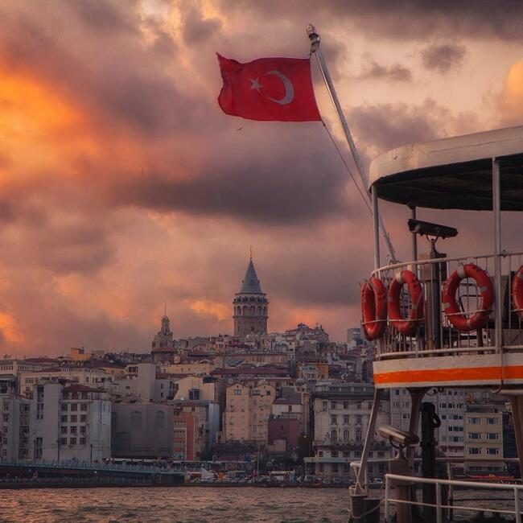

| ABOUT US Istanbul is a major city in Turkey that straddles Europe and Asia across the Bosphorus Strait. Its Old City reflects cultural influences of the many empires that once ruled here. In the Sultanahmet district, the open-air, Roman-era Hippodrome was for centuries the site of chariot races, and Egyptian obelisks also remain. The iconic Byzantine Hagia Sophia features a soaring 6th-century dome and rare Christian mosaics. |
||
| Istanbul has it all: over 2500 years of history, culture, and traditions, amazing landmarks, vibrant nightlife, and breathtaking views. This transcontinental metropolis is a fast-paced cultural melting pot you can't afford to miss. | ||
| Sidebar
Turkish cuisine is the cuisine of Turkey and the Turkish diaspora. It is largely the heritage of Ottoman cuisine, which can be described as a fusion and refinement of Mediterranean, Balkan, Middle Eastern, Central Asian and Eastern European cuisines. Turkish cuisine is world famous with its rich ingredients and dishes made with intensive labor. You can taste these unique flavors in restaurants or in a house where you are a guest. Cooking at home is very common. You can buy fresh food from grocery stores, supermarkets or bazaars established on certain days. Key ingredients being primarily meat, vegetable and legumes, Turkish meals are generally soupy, consisting of some kind of stew or stock. Hence, bread consumption tends to be way too much among Turks. Turkish kebabs, döner kebab, Turkish ravioli and some eggplant dishes are the trademarks of Turkish cookery. Turkish Foods: most delicious foods in Turkey are Manti, Doner Kebab, Kofte, Lahmacun, Turkish Seekh Kebab, Iskender Kebab, Kuzu Tandir, Pide, Yaprak Sarma, etc.. Turkish Foods are made especially non-spicy, rich and savory cuisine – flavors. The Turkish people's aromatic, meaty cuisine is becoming a favorite in many parts of the world for its exquisite taste and combinations. Garnished with leafy vegetables and fibrous legumes, this cuisine houses a delicacy that leaves your tongue relishing for more |
|||
|  |